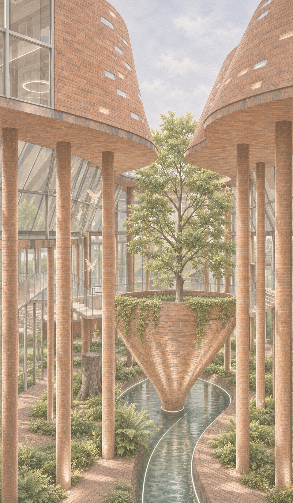
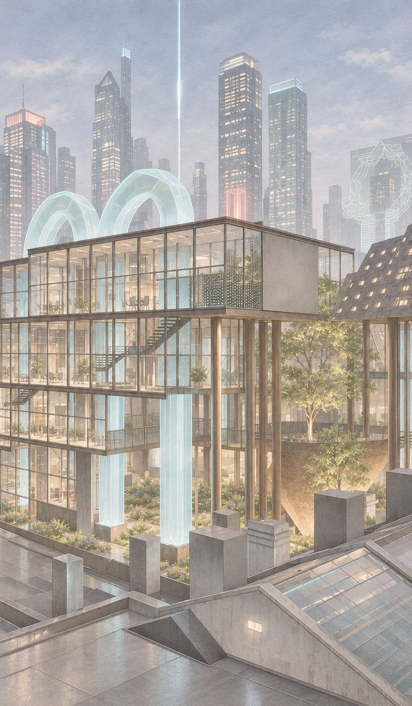
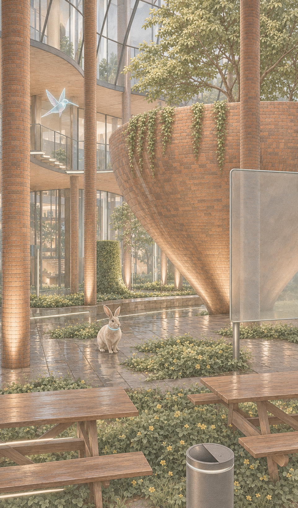
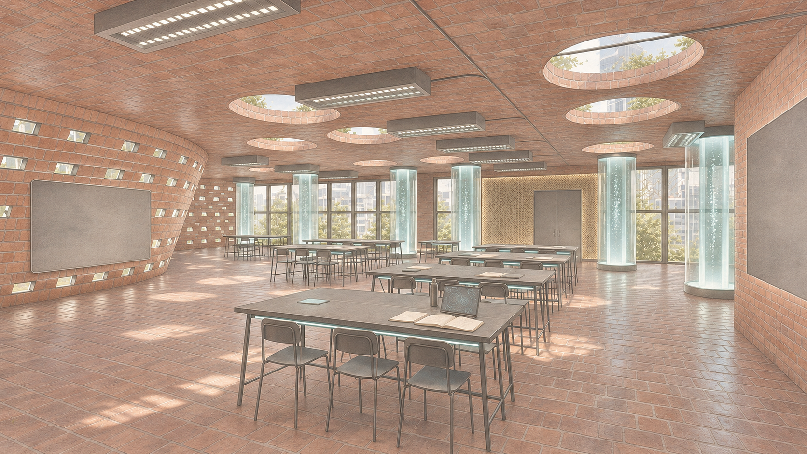
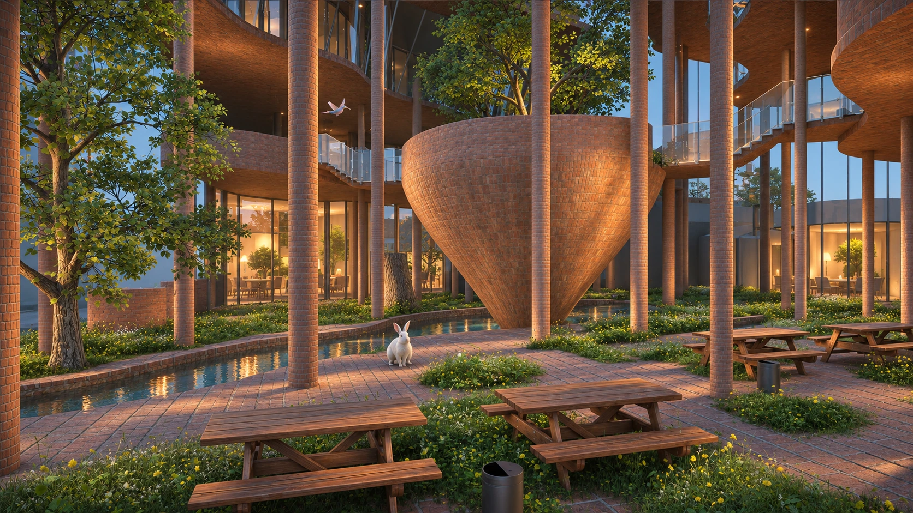

Reinvent RMIT
North Precinct
A campus organised
around water.






Make water part
of campus life.
A speculative reinvention of RMIT's North Precinct brings learning spaces, community gardens and a water-reuse strategy into one building.
The project starts with Melbourne's water infrastructure and asks how a campus might take a more active role in collecting, treating and reusing water. A central garden connects shared spaces below with classrooms above.
How could a building make its relationship with water visible in everyday life?
From city networks
to a local place.
Cardigan Street, nearby open space
and the infrastructure beneath it.
The site and its surroundings
Original site research and photographs; annotations retained.
Cardigan Street connections
Source context study connecting the precinct to its street and public space.
View the original research boards
Historic water networks, filtration references and the green-street study informed the proposal. These are research collages from the studio presentation; embedded references are retained.
Cardigan Street as a green corridor
Original research collage / third-party reference material.
Water and Melbourne’s urban history
Original research collage / third-party reference material.
Historic water infrastructure
Original research collage / third-party reference material.
From catchment to city
Original research collage / third-party reference material.
The metropolitan water network
Original research collage / third-party reference material.
Filtration precedents
Original research collage / third-party reference material.
Treatment and drainage references
Original research collage / third-party reference material.
Water-treatment reference
Original research collage / third-party reference material.
Infrastructure
becomes spatial.
The water-system axonometric links the rooftop elements, teaching floors, central garden and ground-level infrastructure. The proposal uses this vertical relationship to organise both the building and its shared spaces.
Conceptual water-reuse strategy / final studio proposal.
Opening the block.
A sequence of ten studies develops
the mass, garden and street edge.
Start with the urban block
The initial mass sits within the proposed green corridor.
Make room within the mass
Openings establish a relationship between the building and its landscape.
Define the campus edge
The developed envelope brings the building back into the street.
Explore all ten massing studies
Massing study 01
Original design-development model.
Massing study 02
Original design-development model.
Massing study 03
Original design-development model.
Massing study 04
Original design-development model.
Massing study 05
Original design-development model.
Massing study 06
Original design-development model.
Massing study 07
Original design-development model.
Massing study 08
Original design-development model.
Massing study 09
Original design-development model.
Massing study 10
Original design-development model.
A garden at
the centre.
Trace the relationship between
community space, learning and water.
Original site plan / Cardigan, Victoria and Lygon streets.
Entry, community spaces and central garden / original drawing, not to scale.
Shared community areas around the central garden / original drawing, not to scale.
Open-plan classrooms around the central space / original drawing, not to scale.
Upper teaching spaces / original drawing, not to scale.
Original sectional study of the building and water-system elements / not to scale.
Learning around
a living centre.
Street, garden and classroom,
seen through the final proposal.
The shared garden
The central landscape gives the ground level a place to gather.
The campus frontage
Original final studio perspective.
Inside the classroom
Original final studio perspective.
The campus in daylight
Original final studio perspective.
Project context and image notes
Academic proposal by Natthanan Surachartkumthornkul. The 2025 studio source identifies the final project as solo work. Earlier group and midterm studies are separate projects.
This selection combines final studio drawings, original perspectives and later portfolio presentation images. The cover and atmosphere views are AI-assisted presentation studies based on the source renders. Original drawings and research references are retained. Water recycling is presented as a design proposition, without a claim of verified treatment performance.
The same place.
A softer light.
Courtyards, facades and learning spaces,
with a final view of the garden at dusk.
The precinct in soft light
The campus and its public realm in a pale architectural palette.
AI-assisted presentation studyA route through the garden
Brick columns and planting frame the central waterway.
AI-assisted presentation studyThe street corner
Glazed learning spaces open towards the surrounding city.
AI-assisted presentation studyWater and structure
The courtyard brings brick, water and shared outdoor space together.
AI-assisted presentation studyWater and light in the studio
Daylight filters through circular roof openings into the brick studio.
AI-assisted presentation studyThe garden at dusk
Warm brick, planting and water at the centre of the campus.
AI-assisted atmosphere study